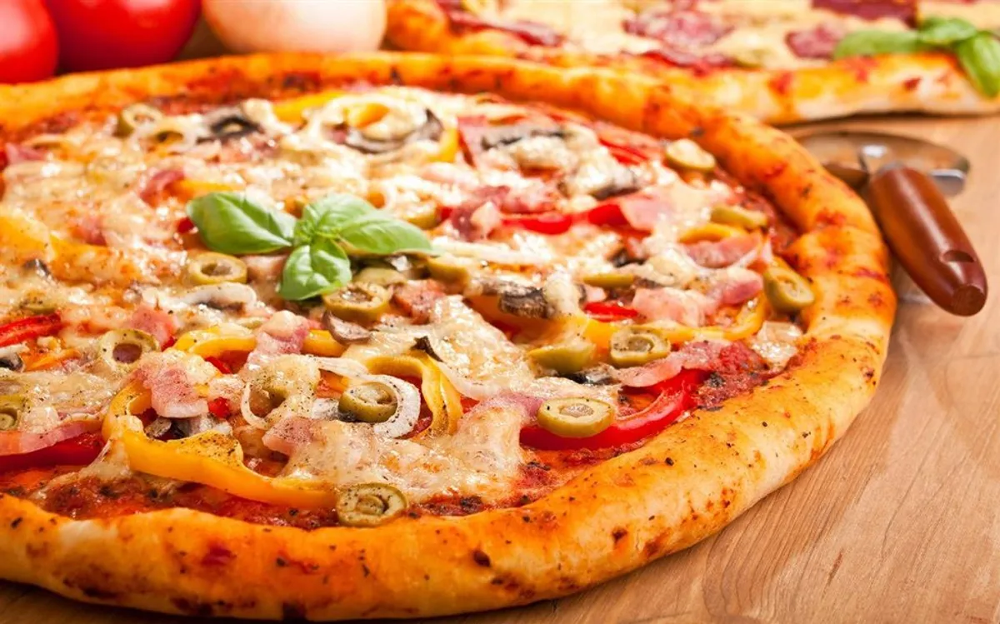

Home
Pizza Deliciozo

Description
This is a delicious pizza coming right from the oven!
A tasty pizza choice which chicken and sprinkled with quattro fromagi on
top!
Ingredients
The necessary ingredients are the following:
- 1-1/2 pounds bulk Italian sausage
-
3 cups uncooked rigatoni or large tube pasta 4 cups shredded part-skim
-
mozzarella cheese 1 can (10-3/4 ounces) condensed cream of mushroom soup
- undiluted 1 small onion
- chopped 2 cans (one 15 ounces, one 8 ounces) pizza sauce
- 1 package (3-1/2 ounces) sliced pepperoni
- 1 can (6 ounces) pitted ripe olives, drained and halved
Steps to make
-
In a skillet, cook sausage until no longer pink; drain. Cook pasta
according to package directions; drain.
-
In a 5-qt. slow cooker, layer half of the sausage, pasta, cheese, soup,
onion, pizza sauce, pepperoni and olives. Repeat layers. Cover and cook
on low for 4 hours.